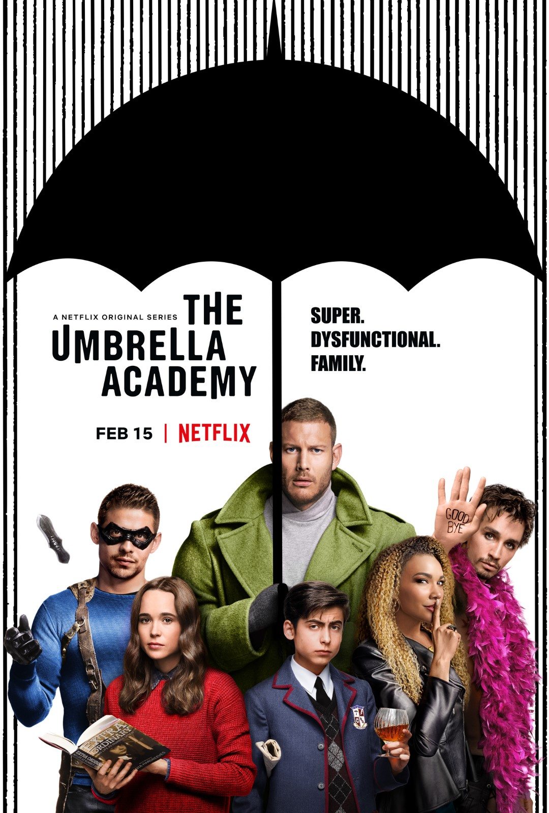
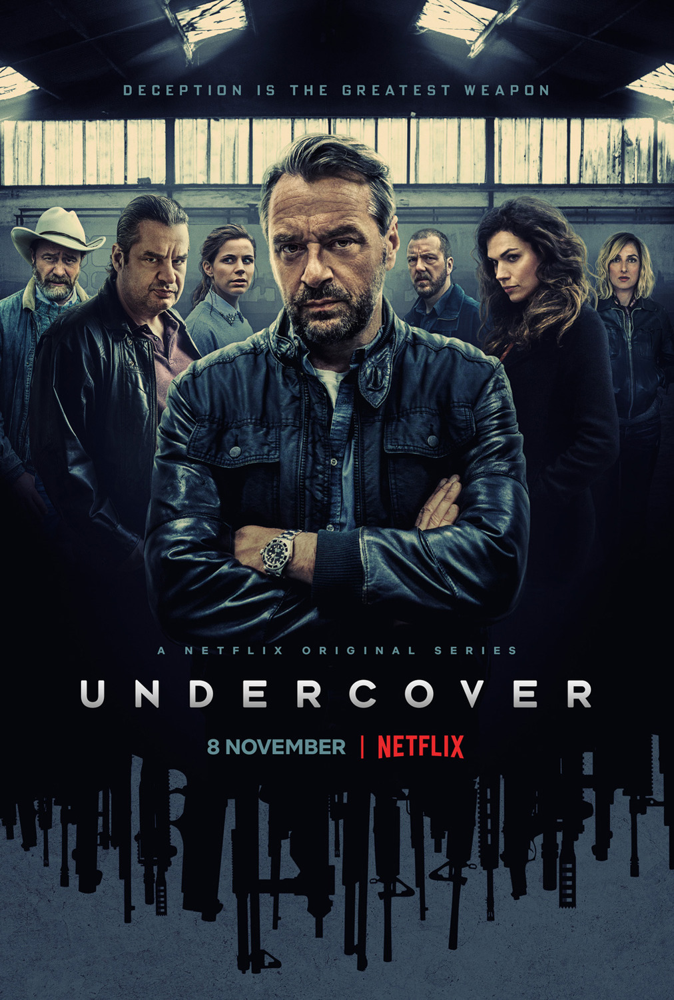
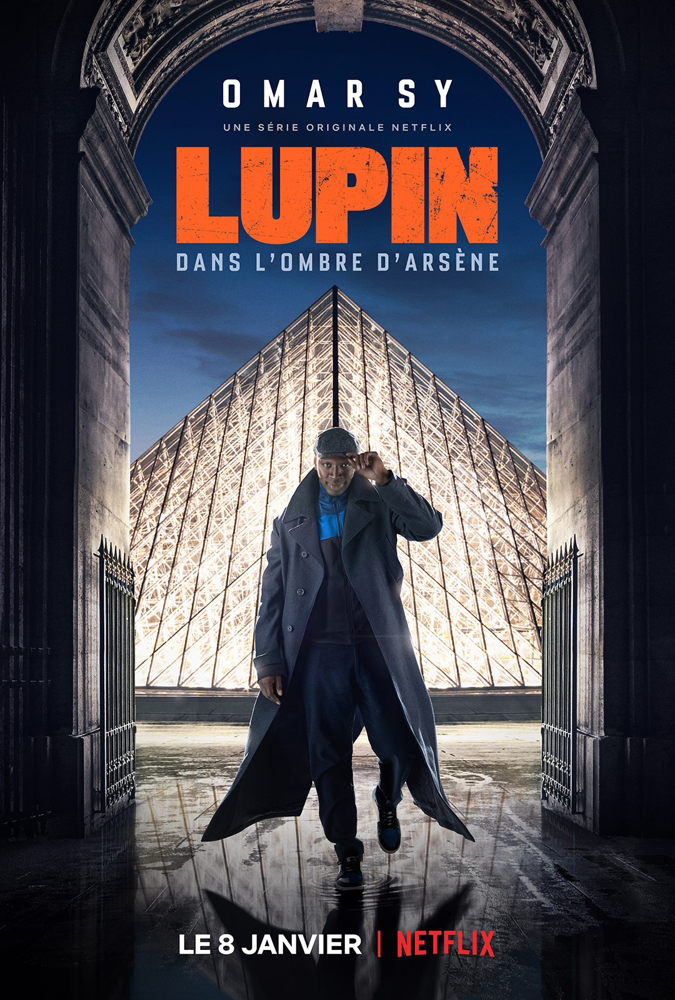

Um grupo de amigos se envolve em uma série de eventos sobrenaturais na pacata cidade de Hawkins.
Um grupo de jovens vai a uma festa em uma ilha paradisíaca, mas acaba vivendo um inferno cheio de segredos, perigos e armadilhas.
Irmãos com poderes extraordinários se reúnem depois de passar muito tempo afastados e descobrem surpreendentes segredos de família.
A astronauta Emma Green comanda uma perigosa expedição rumo a Marte e deixa para trás o marido e a filha por três anos.

Após um pouso forçado em um planeta desconhecido, a família Robinson tenta sobreviver aos perigos que encontra nesse novo mundo.
Quase 100 anos após um apocalipse nuclear devastar a Terra, 100 sobreviventes de uma estação espacial voltam para avaliar as condições do planeta.
AÇÃO

O mutante Geralt de Rívia é um caçador de monstros que luta para encontrar seu lugar em um mundo onde as pessoas, muitas vezes, são mais perversas do que as criaturas selvagens.

Dois policiais se infiltram na operação de um chefão do tráfico disfarçados como seus vizinhos. Contudo, as fronteiras entra a vida real e o disfarce começam a se tornar nubladas.
Para proteger sua família de um poderoso chefão do tráfico, o habilidoso ladrão Mehdi e sua gangue acabam envolvidos em uma violenta disputa por território.

Durante o apocalipse zumbi, estranhos se unem para sobreviver e voltar para aqueles que amam.
O fugitivo Raymond Red Reddington é um ex-agente do governo que decide se entregar ao FBI e ajudar a prender criminosos internacionais com uma misteriosa condição: trabalhar em parceria apenas com a principiante Liz Keen.

Em um mundo congelado, os últimos habitantes da Terra se esforçam para viver em uma sociedade complexa dentro de um trem que está em constante movimento.
AVENTURA
Seis adolescentes convidados para participar de um acampamento de última geração na Ilha Nublar precisam se unir para sobreviver quando os dinossauros se soltam do cativeiro.

A série acompanha a saga dos navegadores nórdicos que exploram - e conquistam - novos territórios nos tempos medievais.

Inspirado pelas aventuras de Arsène Lupin, o ladrão gentil Assane Diop quer se vingar de uma família rica por uma injustiça cometida contra o pai dele.

Acompanhe as aventuras do homem mais veloz do planeta, o cientista da Central City Police Barry Allen, que após um trágico acidente adquire o poder da velocidade.

Após um violento naufrágio, o playboy milionário Oliver Queen é dado como morto. Cinco anos depois, é resgatado de uma ilha do Pacífico e enviado de volta para Starling City, onde passa a agir como vigilante secreto.
O jovem John convoca seus melhores amigos para procurarem por um tesouro ligado ao desaparecimento de seu pai. Aos poucos, o grupo vai entrando em uma perigosa trama de segredos e perigos.
TERROR

The Sandman é uma série de televisão americana de drama. Criada por Allan Heinberg baseado na série de histórias em quadrinhos de mesmo nome de Neil Gaiman e publicada pela DC Comics. Está disponível na Netflix
Após o assassinato do pai, três irmãos se mudam com a mãe para uma casa antiga onde descobrem chaves mágicas que revelam poderes e segredos.
O passado macabro da artista Sarah começa a se repetir quando ela e seu marido voltam a Waterbury.
Um médico cético se envolve em uma série de acontecimentos inexplicáveis e se torna uma autoridade em investigações paranormais, mesmo contra sua vontade.
Um grupo de sobreviventes do apocalipse zumbi transporta o único homem imune ao vírus para um laboratório para tentar criar uma vacina.
Anos depois do surto viral que provocou o apocalipse mundial, Jade Wesker luta para sobreviver entre os infectados e jura derrubar os responsáveis.
COMÉDIA
Jake Peralta é um detetive brilhante e ao mesmo tempo imaturo, que nunca precisou se preocupar em respeitar as regras.
Após a morte da esposa, Tony se transforma em um cara insuportável e espanta quem tenta lhe ajudar.

Sam, um adolescente com traços de autismo, resolve arrumar uma namorada. Sua busca por independência coloca toda sua família em uma aventura de autodescoberta.

A egocêntrica Eleanor morre e é enviada ao lado bom do Além por engano. Para continuar lá, ela se esforça para se tornar uma pessoa melhor.
Devi não é uma adolescente muito popular, mas está decidida a mudar isso.

Uma versão subversiva de Archie, Betty, Veronica e seus amigos, explora o surrealismo da vida em uma pequena cidade e mostra a estranheza que se esconde atrás da fachada saudável de Riverdale.